What would you do if you witness such a situation? 117
Care for friends
Did you observe the picture?

What would you do if you witness such a situation? 117
Care for friends
Did you observe the picture?

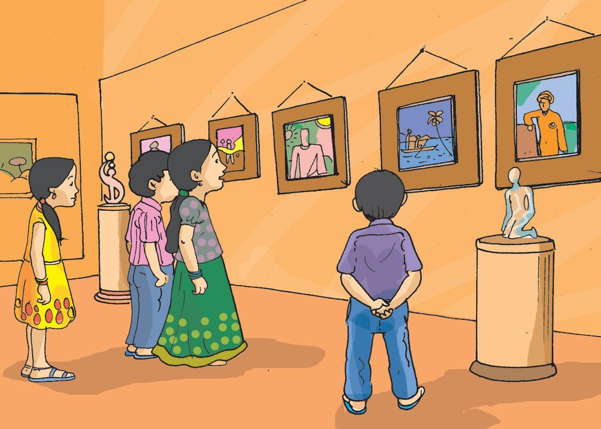
Read these news headlines? Do we usually help people when they meet with accidents? What all can be done in such situations?
$ can take them to hospital. $ can inform elders. $ can inform concerned authorities. $ $ Have you or your friends ever met with accidents? Mention some common accidents.
Fire burns
Environmental Science
Accidents
118

We too can help... Don’t people who meet with accidents need care before reaching hospital? First Aid is the care given to a person who meets with an accident, before he or she receives medical assistance.
First Aid What are the benefits of first aid? to reduce the intensity of the injury.
$ $
What are the duties of provider?
a first aid
$ console the accident victim. $ provide medical assistance at the earliest.
$ We must have a clear idea about the first aid to be provided to the victim in each accident case.
Wounds Have you ever get wounded?
clean the wound with pure water.
hold the wounded part high.
119
Care for friends
What do we do when the wound is minor?

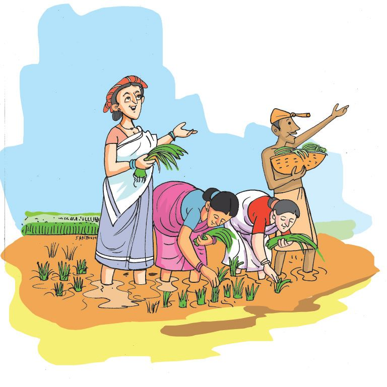
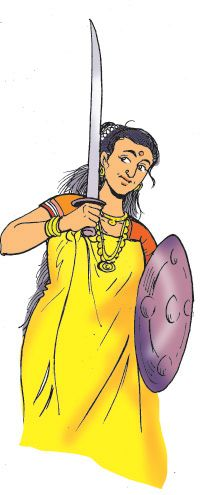
hold the wounded part tightly with a clean cloth to prevent bleeding.
don’t remove the blood clot from the
injured part.
do not leave the wounds open as it will cause infection.
let the injured person be seated or
laid comfortably, if the injury is serious.
take the injured person to hospital, at the earliest.
Why should the first aid provider keep his hands clean?
Nose bleed...
Let the person sit leaning forward.
Press the tip of the nose with the thumb and forefinger.
Ask the person to breathe through the mouth.
Don’t let the person to talk.
Seek medical assistance.
A mole in the eye...
Environmental Science
It is common that dust falls into the eye at times. Why should you not rub the eye when dust falls into it? How can the speck of dust in the eye be removed?
120
We can rinse the eye with clean water or remove the speck of dust with the tip of a wet kerchief. Particles that get into the eye should not be forced out, but removed only with medical assistance.
Sprain Have you felt a sprain while playing or stepping downstairs? What will you do when there is a sprain?
Hold the sprained part high without moving.
Place an icepack to reduce pain.
Icepack A plastic cover with ice pieces and water wrapped by a clean piece of cloth can be used as an icepack.
Bruise Do bruises occur on the body when heavy objects fall on it? What first aid can be provided for a bruise?
$
Do not apply heat or massage the area.
121
Care for friends
You can place a wet piece of cloth or an icepack on the bruised part to avoid pain or swelling.

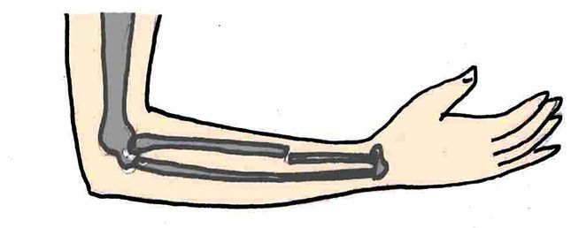
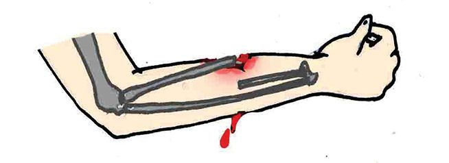
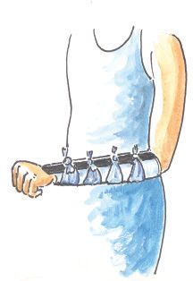
Fainting What will you do if your friend fainted while playing in the ground?
see that the person can lie down when he feels giddy.
then hold the legs high.
loosen tight clothes, if any.
ensure fresh air by avoiding to crowd around the person.
Fracture Sometimes bones fracture due to accidents. But the surrounding body parts may not get injured. In some other instances the broken bone comes out piercing the body. Take care to prevent bleeding and germs from entering the wound. Provide medical assistance immediately.
Splint
Environmental Science
While dressing the fractured part, a splint is used to prevent the movement of joints above and below the fractured bone. A normal ruler, thin piece of wood, cardboard etc., can be used for this.
Shift the fractured person only after keeping the fractured part intact. A splint may be used for this purpose. 122

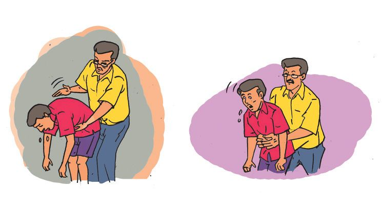
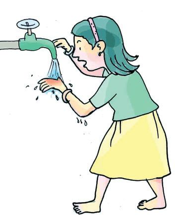
Food choking Food getting blocked in the throat is a dangerous situation. The immediate first aid provided at the time, helps to save life. Press the stomach with one hand and tap strongly on the back of the affected person. If the food does not come out even after this is done for 3-5 times, provide medical assistance immediately.
Burns Have you ever suffered from burns? What are the situations of getting burns?
$ $ $
when acid falls on the body.
pour water continuously over the burnt area.
don’t put ice on the burnt area.
don’t pull away the cloths stuck to the burnt area.
don’t apply anything as medicine on the burnt area. 123
Care for friends
What should be done when there is a burn?

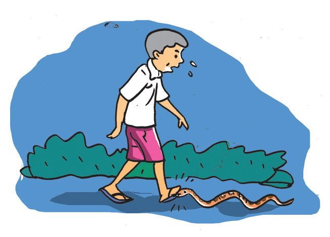
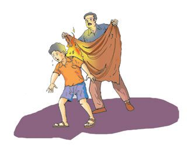

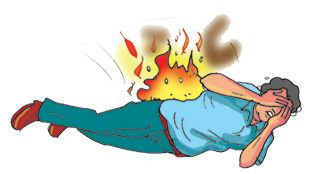
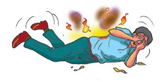
When the dress catches fire...
try to extinguish the fire using water.
rolling on the ground helps to put out the fire.
do not allow the person to run in panic. Fire blazes by the wind.
cover the person immediately with a thick blanket or jute sack.
What are the precautions that can be taken to avoid burns? Discuss and note down in your environment diary.
Snake bite
Environmental Science
What first aid can be given to a person bitten by a snake?
console the person.
do not allow the person to run or walk.
wash the wound clean.
keep the bitten part lowered.
provide medical assistance at the earliest.
There are poisonous and nonpoisonous snakes. Identifying the snake will make the treatment easy. 124
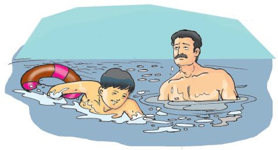
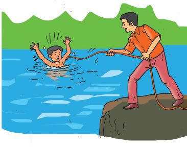
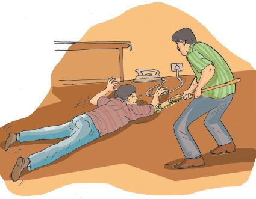
What are the precautions that can be taken against snakebites? Note them down.
Drowning Knowing to swim will reduce accidents in water. We can bring a person who fell in water ashore by providing him a long rope or cloth or piece of wood. One should take care of himself while trying to save a person drowning in water. Do not jump into the water if you do not know swimming. Try to seek the help of others.
Electric shock Don’t we use a number of electric equipments? Great care should be taken while using them. What could be done to save a person from an electric shock?
$
Switch off the power supply. If the flow of current cannot be stopped, separate the affected person from the electric connection using a glove or a dry piece of wood.
What other materials can be used for this? The safety of the person who helps is also important.
125
Care for friends
What precautions can be taken to prevent electric shocks? Discuss and note them down in the environment diary.

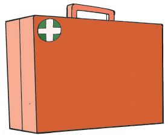
First Aid Box What are the materials necessary for first aid? Don’t you have a first aid box with all such things in your school and home? Let us set a first aid box. Materials to be included in the first aid box.
$ Antiseptic $ Cotton $ Bandage $
First Aid Day
$
Accidents can happen to anyone at anytime. First aid helps to save the precious life.
Every year, the second Saturday of September is observed as First Aid Day to bring out the significance of first aid.
First aid, our noble duty
Significant learning outcomes The learner
Environmental Science
identifies and lists out situations when accidents may happen.
identifies and states the importance of first aid.
defines first aid.
explains the kind of first aid for each accident.
prepares a first aid box and uses it appropriately.
126


Let us assess 1. Why do we press the wound tightly when it bleeds excessively? (a) to reduce pain. (b) to avoid germs. (c) to reduce bleeding. 2. When there is a burn on the hand... (a) place ice. (b) apply tooth paste. (c) cool under running water.
1.
Organise a training class on first aid with the support of Health workers.
2.
Prepare first aid charts, posters etc., stating clearly the importance and methods of first aid. Exhibit them in your class.
3.
Prepare a' first aid pamphlet' including newspaper reports related to various accidents.
4.
Enact a short play on the importance of first aid on First Aid Day in your school.
5.
Collect pictures, videos and detailed information related to first aid.
127
Care for friends
Extended activities